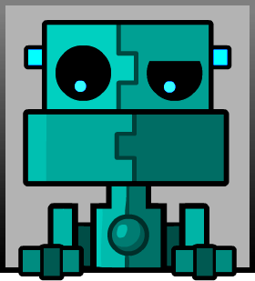
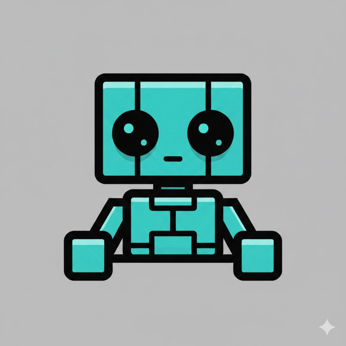

Primera sang nhà Scratch để nghiên cứu một món đồ mới cho cửa hàng của Scratch: Cycles' Ball — Quả bóng Cycles. Nó có chức năng "bay phản trọng lực" dính lên trần nhà, hoặc bay thẳng lên không trung nếu không có trần nhà thông qua điều khiển từ xa, và di chuyển trái phải ngay cả khi đang phản trọng lực trên trần nhà. Sau ba tiếng thử nghiệm, quả bóng có vẻ sắp được hoàn thiện. Họ quyết định sẽ sửa những lỗi nhỏ vào ngày mai. Trước khi Primera về nhà sau một buổi thử nghiệm Quả bóng Cycles với Scratch, anh bỗng thấy được chân dung của Scratch như hình.

PRIMERA: "Ông nhìn… khá là thú vị đấy. Tại sao ông lại không cười hay để mặt trung lập trong chân dung của ông vậy, mà lại nhìn xuống dưới?"
SCRATCH: "Tôi nghĩ tôi sẽ nhìn xấu hơn nếu để như vậy."
PRIMERA: "Nó làm tôi nhớ tới mấy cái quán photo, in ảnh giờ đây dùng ChatGPT để làm ảnh thẻ học sinh. Tôi nhìn vậy cũng thấy hơi quan ngại, vì tôi sợ kĩ năng chỉnh sửa ảnh sẽ tích bụi và hao mòn, thay thế bằng kĩ năng viết lệnh sửa ảnh. Họ sẽ chỉ nghĩ tới việc dùng mấy con chatbot để làm việc thay mình…"
SCRATCH: "Tôi không nghĩ trí tuệ nhân tạo giỏi đến thế đâu. Hay là thế này: Cho chân dung trên của tôi vào một con chatbot, để con bot đấy miêu tả, sau đó nhờ con bot tạo ảnh thông qua cái miêu tả đó?"
PRIMERA: "Ý hay! Mặc dù nó hơi khác ý tưởng của tôi một chút, tại sao không thử nhỉ?"
Scratch lập tức mở Gemini trên điện thoại iPhone 14 Pro Max…
PRIMERA: "Khoan… ông là người dùng iPhone à?"
SCRATCH: "Đúng vậy. iPhone muôn năm!"
PRIMERA: "Sai! Samsung mới là hãng điện thoại tốt hơn!"
…và nhờ Gemini mô tả chân dung của mình.
Gemini cho kết quả:
A blocky, stylized robot character from the game Geometry Dash, characterized by its teal and cyan color palette and thick black outlines. The robot's design is defined by a rectangular head and torso that interlock vertically like puzzle pieces, giving it a unique mechanical aesthetic. It has two large, circular black eyes with small, glowing cyan pupils that provide a curious or neutral expression, while its small, blocky arms at the bottom make it appear as though it is peering over a ledge. The entire figure is set against a simple, grainy grey background, maintaining the clean, vector-based art style typical of the game's icon kits.
Scratch thấy rằng Gemini mô tả rất rộng. Anh cho rằng "một hình ảnh đáng giá một nghìn chữ thật".
Sau đó, Scratch yêu cầu Gemini tạo một bức ảnh có nội dung y hệt. Kết quả thì lại khác với ảnh gốc ở rất nhiều chỗ.

SCRATCH: "Hmm… Ảnh này khiến cho tôi nhìn như trẻ con vậy. Ông thấy đấy. Chatbot chưa thay thế mấy ông anh ở quán photo được đâu. Nó còn không giữ nguyên được những chi tiết của chân dung gốc. Cái bức ảnh gốc đáng một nghìn chữ, còn cái này thì… hai trăm chữ kịch khung."
PRIMERA: "Đấy là vì miêu tả của Gemini chưa đủ một nghìn chữ thôi."
Khán giả cười.
SCRATCH: "Khoan. Đây là lần thứ hai cái tiếng khán giả cười xuất hiện rồi đấy!"
PRIMERA: "Ông vẫn còn nhớ cái lần hai ta ngủ trên mái nhà rồi ông tưởng đó là sân khấu chứ gì?"
SCRATCH: "Đúng. Tôi nghĩ là chúng ta đang sống trong một sân khấu. Mà nếu vậy, thì hẳn cái 'tôi' mà đang nói chuyện với ông này là một ánh trăng lừa dối, và phiên bản thật của tôi đang ở một nơi khác."
PRIMERA: "Ông lo toan quá đấy. Thôi, tôi về trước đây. Ông tự xử lý cái tiếng cười đấy nhé."
SCRATCH: "Ừ. Chào ông…"
Scratch nhìn quanh.
SCRATCH: "Nếu đây không phải một vở diễn, thì nó là gì mà lại có tiếng khán giả cười vậy?"